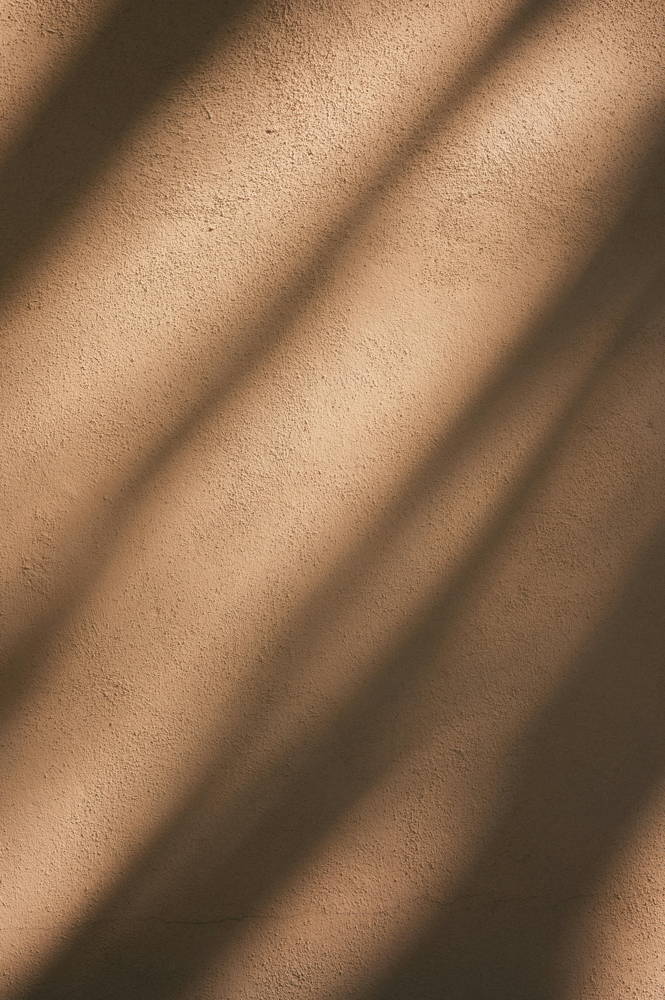

Personal Connection
During my research, I realized this project was motivated by my personal experience. I once lived in a large loft with tall ceilings and spacious rooms. I lived there for only a few months because my bedroom had no window.
This might sound strange, but it's common in New York City. Many lofts have windowless rooms, and countless people live in apartments with minimal natural light.
My experience clarified why windows matter.
Unfortunately, the more natural light you have, the wealthier you tend to be. New York's housing crisis is complex, and I don't have all the answers. Beyond socioeconomics, my project brings awareness to natural light and how it shapes human well-being in interior spaces.